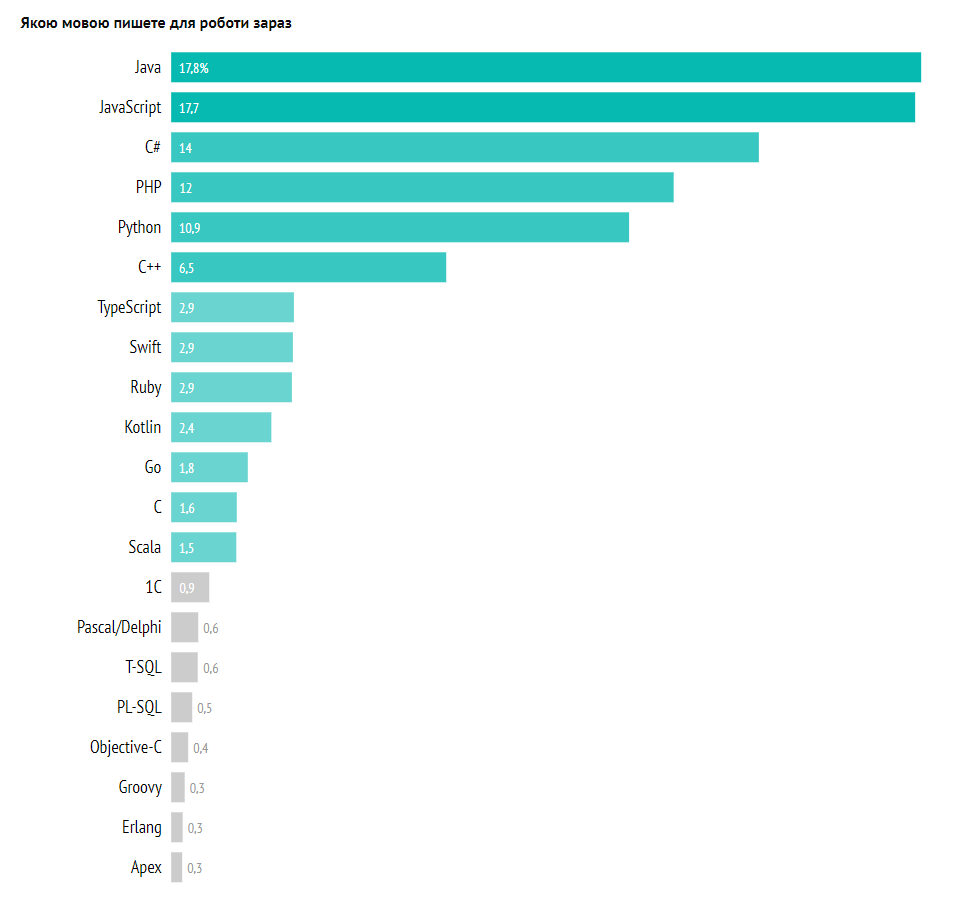
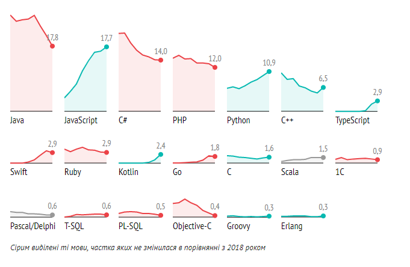

Основні гравці не змінилися — частка JavaScript та Java майже однакова. З іншого боку, до рейтингу знову увійшла Erlang, що «зникла з радару» в 2017-му, — цього року більш ніж 20 розробників вказали цю мову як основну. І серед відносно нових мов — Apex, що вже з’являлася у нашому опитуванні в 2012 році.

Несподіванки:
Збільшилася частка проектів на C++ та C — це можна пов’язати з подальшим поширенням інтернету речей.
Почала скорочуватися частка Go проектів, тут мені важко щось сказати про можливі причини.
Почала знижуватися частка Swift (що статистично незначно) — звідси ми можемо зробити висновок, що можливо, розробка на iOS скорочується загалом. Чи є це флуктуацією в рамках похибки або довготривалою тенденцією — подивимося наступного року.

TIOBE
TIOBE індекс (рейтинг мов програмування) — показник популярності мов програмування, розшифровується «як важливо бути серйозним». Індекс спільноти програмування TIOBE є показником популярності мов програмування. Індекс оновлюється раз на місяць. Рейтинг базується на кількості кваліфікованих інженерів у всьому світі, курсах та сторонніх постачальників. Популярні пошукові системи, такі як Google, Bing, Yahoo !, Вікіпедія, Amazon, YouTube та Baidu, використовуються для обчислення рейтингів. Важливо зазначити, що індекс TIOBE - це не найкраща мова програмування чи мова, якою написано більшість рядків коду. Індекс може бути використаний для перевірки того, чи зберігаються ваші навички програмування, або прийняти стратегічне рішення щодо того, яку мову програмування слід прийняти під час початку створення нової програмної системи.